De installatie van Ubuntu is een reeks schermen waarin je telkens één keuze maakt. Neem de keuzes hieronder over: ze zorgen ervoor dat de uitleg in de labo's over Linux overeenkomt met wat jij op je scherm ziet. Het installatieprogramma spreekt Engels, ook wanneer je Ubuntu daarna in het Nederlands gebruikt.
Ze schrijft in die tijd een paar gigabyte naar de virtuele harde schijf. Laat de virtuele machine draaien terwijl je verder leest.
Language: English
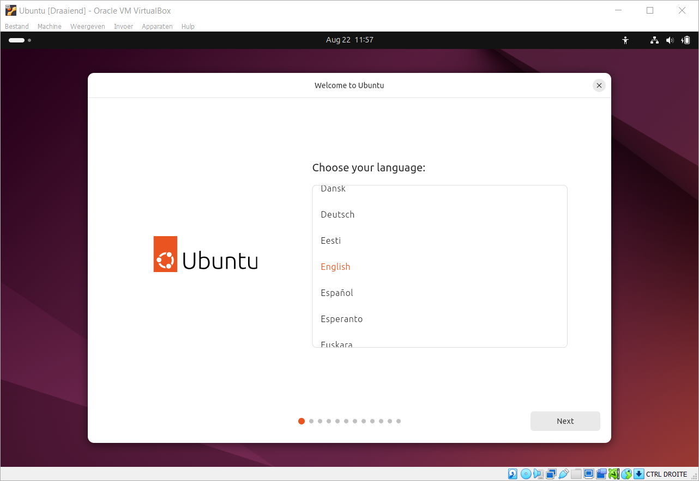
Accessibility: klik op Next zonder iets aan te zetten
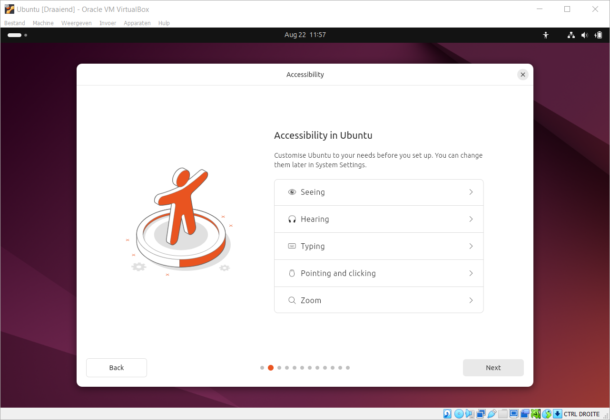
Keyboard layout: Belgian. België heeft een eigen toetsenbordindeling, en kies je hier de verkeerde, dan staan later je leestekens en je cijfers ergens anders dan op je toetsenbord.
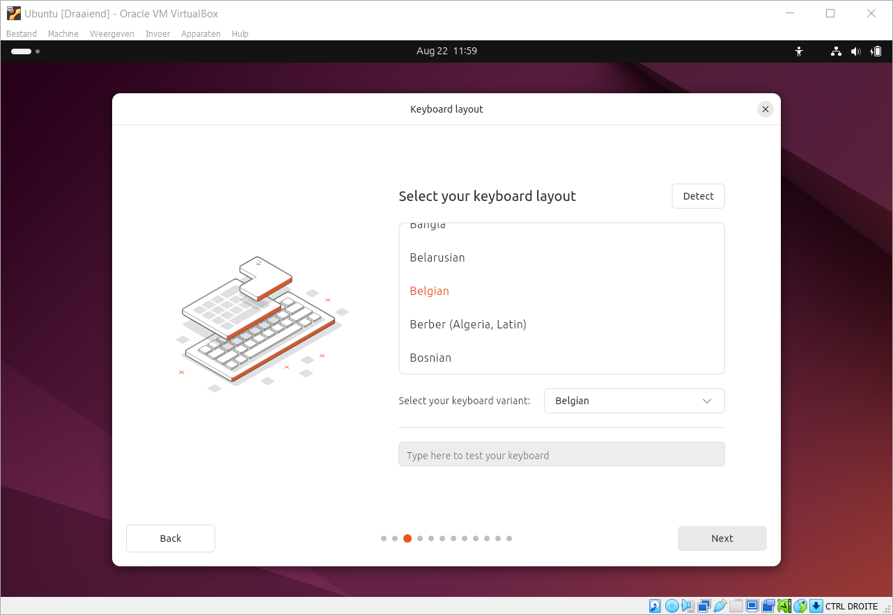
Connect to the Internet: use wired connection
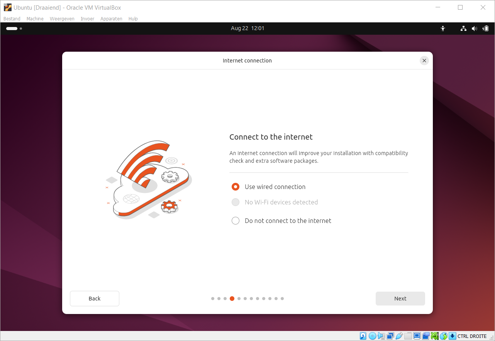
What do you want to do with Ubuntu: install Ubuntu
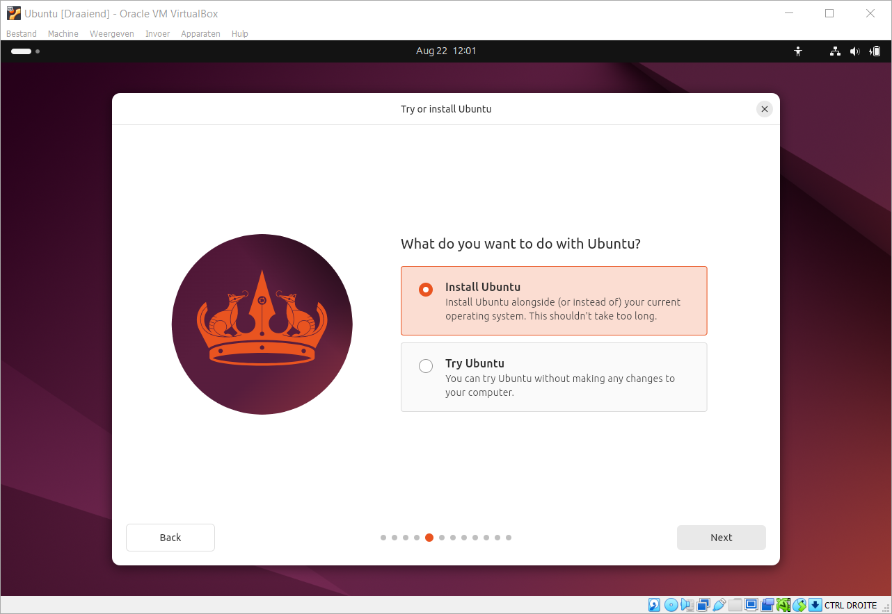
How would you like to install Ubuntu: interactive installation
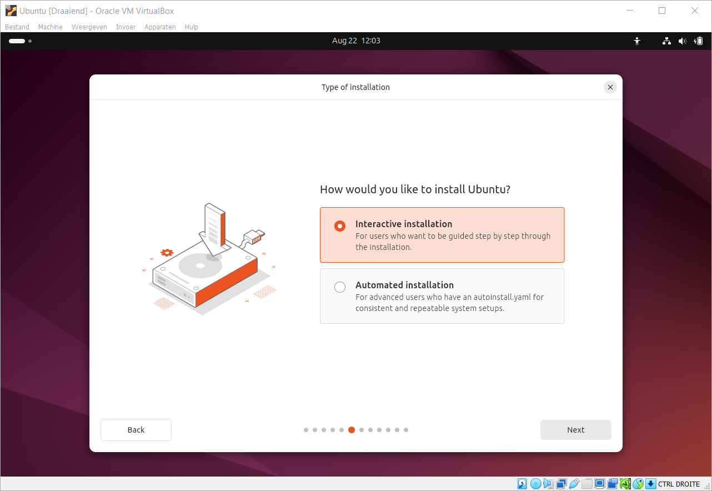
What apps would you like to start with: laat de standaardkeuze staan
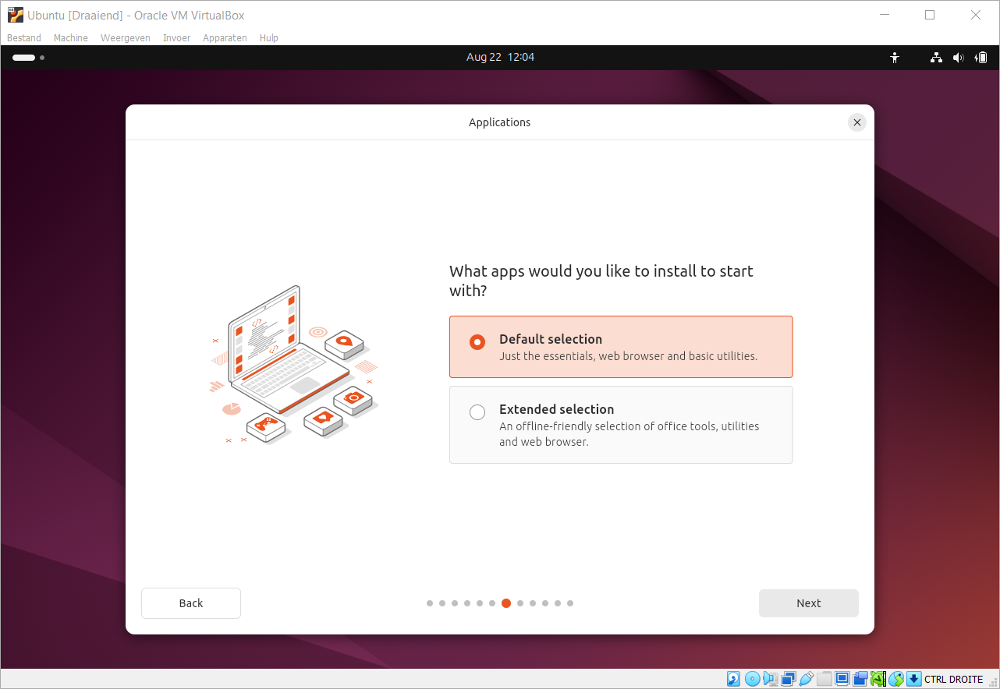
Install recommended proprietary software: zet dit aan. Wat proprietary software is en wat de afweging is om ze al dan niet te installeren, staat op Software in de guest.
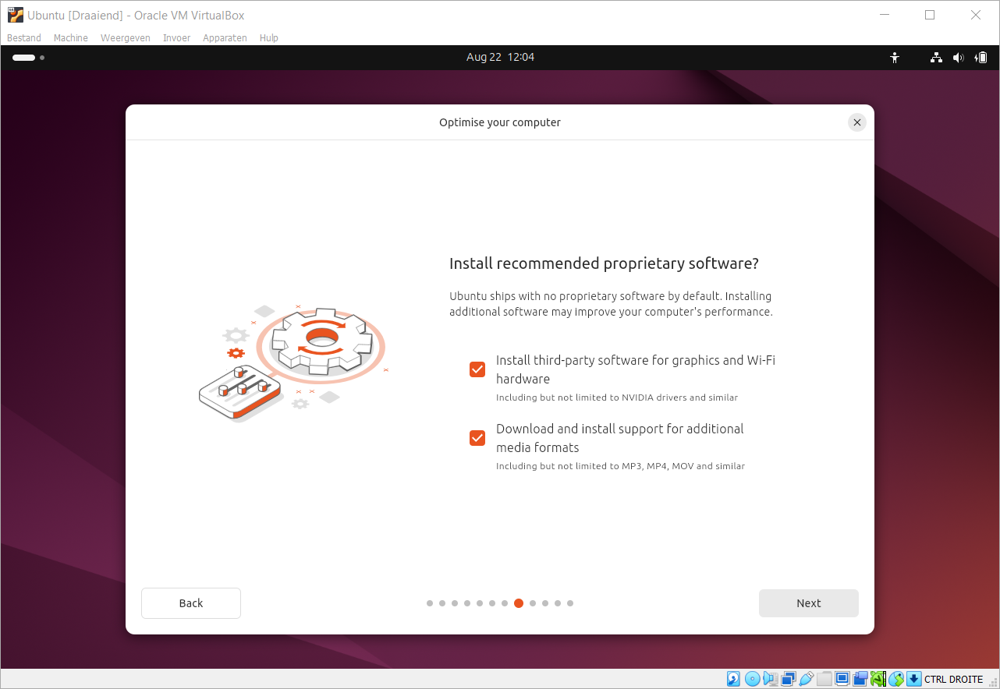
How do you want to install Ubuntu: erase disk and install Ubuntu. Die schijf is de virtuele harde schijf, en die is leeg; de Windows op je laptop staat er los van.
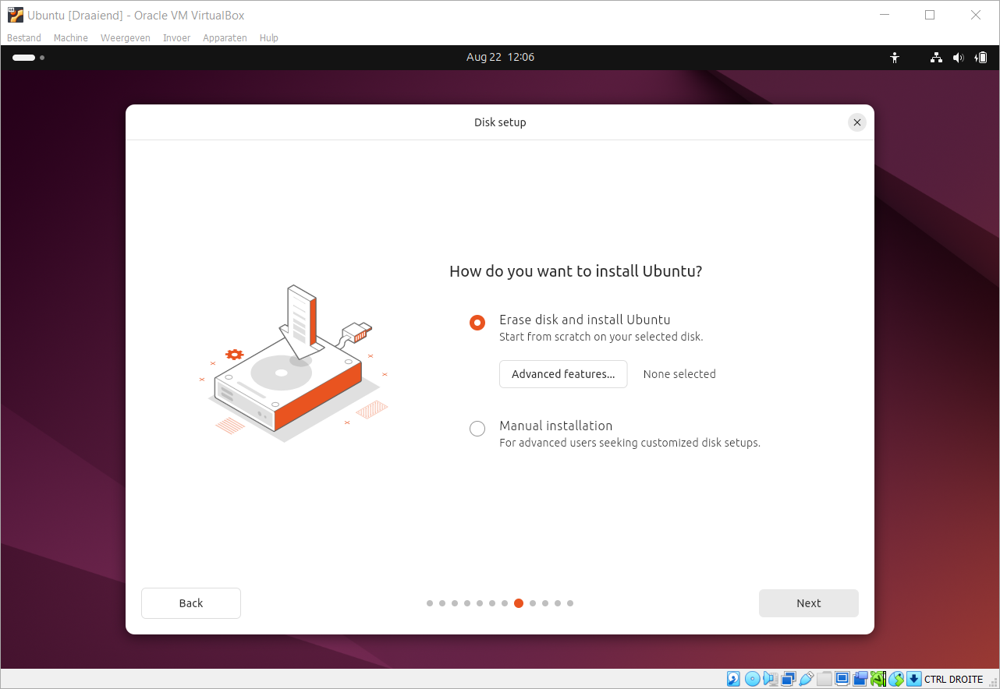
Create your account. Neem de gegevens hieronder letterlijk over.
| Veld | Wat je invult |
|---|---|
| Your name | elm |
| Your computer's name | elm-VirtualBox |
| Your username | elm |
| Your password | mle |
De schermafdrukken en de commando's in dit labo en in de labo's over Linux tonen de gebruiker
elm. En vergeet je je wachtwoord, dan is Ubuntu opnieuw installeren de enige
weg terug.
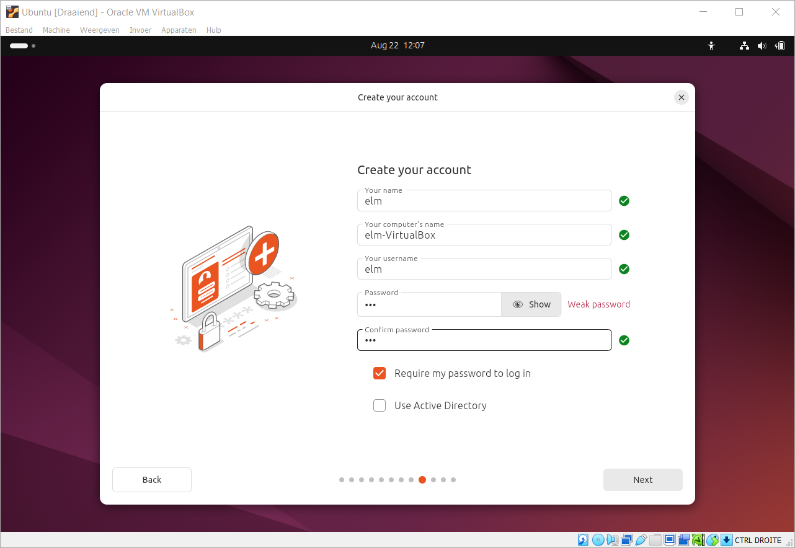
Select your timezone: Brussels
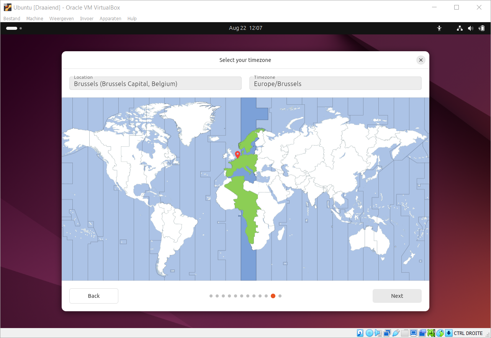
Ready to install: loop het overzicht na en start de installatie
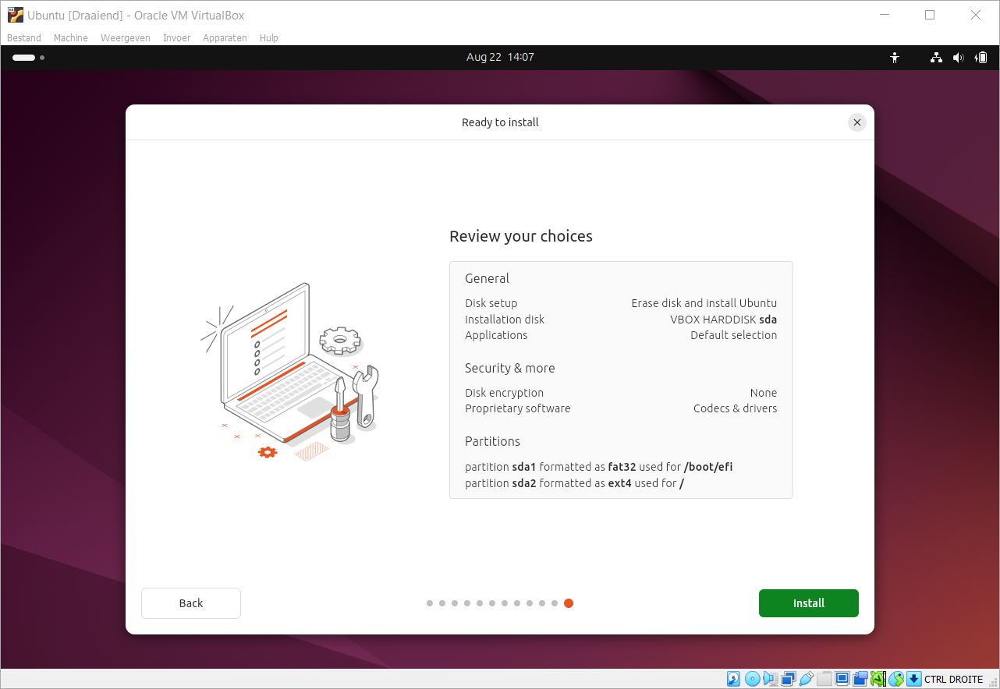
Ubuntu vraagt op het einde om de installatiemedia te verwijderen en op Enter te duwen. VirtualBox haalt het ISO-bestand zelf uit het virtuele station, dus je duwt gewoon op Enter en de machine start opnieuw op, deze keer van de virtuele harde schijf.
Je Ubuntu draait dan, maar in een klein venster en zonder gedeeld klembord met je laptop. Dat lost Guest Additions op, en dat is de volgende stap van deze opdracht.